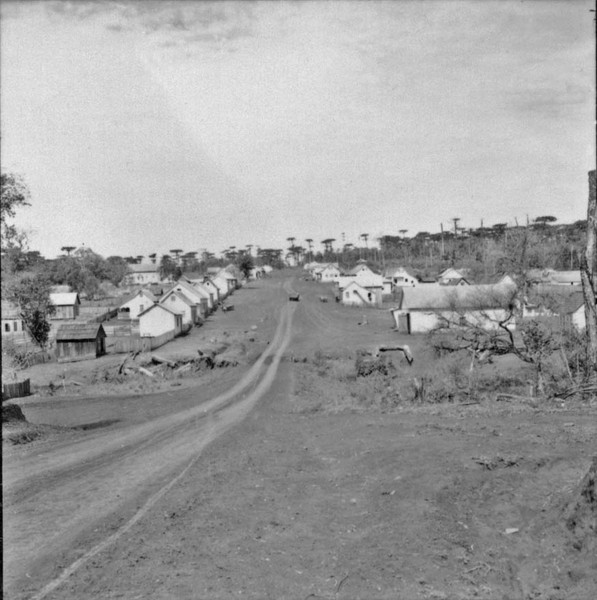

RONCADOR
Por volta de 1920, uma comissão exploradora encarregada de demarcar a estrada que faria a ligação do Paraná ao Mato Grosso, instalou um acampamento onde hoje se localiza a sede do município de roncador. Com a derrubada das matas, foram surgindo as primeiras plantações, como também as criações de suínos.
Dizem os pioneiros que em uma noite chuvosa ouvia-se ao longe o barulho produzido pelas copas dos pinheiros, e também um forte ronco produzido por uma queda D água, o barulho era ouvido a km, e desta forma, denominaram o rio de Roncador e futuramente o nome da cidade passou a ser "RONCADOR".
A colonização de Roncador, pode-se dizer, teve inicio , em 1923, com a chegada das primeiras famílias dos senhores João Mariano e Jorge Rodrigues Monteiro. Já, em 1927, chegou a família Mendes, em 1933, os Kovalek, e, em 1936, os Vogivoda.
Também, em 1927, foi construída a primeira estrada para carroças, empreitada com o Governador do Estado, Dr. Afonso Camargo. A partir daí, começaram a chegar mais famílias de diferentes regiões e estados.
O primeiro professor do município foi o Ser. Paulo Schner, e em 1944, foi nomeada a primeira professora, a Sra.Verônica Zola. Devido ao crescimento do vilarejo, em 1952, a congregaçãos das irmãs Servas da Imaculada Virgem Maria, descendentes de ucranianos sediados em Prudentópolis(PR), abriu uma escola, cuja construção contou com ajuda de toda população.

Curiosidades sobre Roncador:
Origem e Primeiros Habitantes: A região já era frequentada por pessoas por volta de 1920, mas o povoamento efetivo começou mais tarde.
Colonização (1923-1927): O início da colonização é datado de 1923. Em 1927, chegaram as primeiras famílias e foi aberta a primeira estrada para carroças.
Nomeação de Professores: O primeiro professor da região foi Paulo Schneer. Em 1944, Verônica Zola foi nomeada a primeira professora.
Educação e Comunidade: O desenvolvimento educacional teve um marco em 1952, quando a Congregação das Irmãs Servas da Imaculada Virgem Maria estabeleceu uma escola, impulsionando o crescimento local.
Fundação/Emancipação: Roncador foi oficialmente fundada como município em 1960.
Localização e Desenvolvimento: O município fica a cerca de 435 km de Curitiba, a capital, e faz divisa com cidades como Mamborê, Nova Cantu e Iretama.
População Atual: Atualmente, a cidade tem aproximadamente 11.300 habitantes.
Memória Local: A história da cidade é preservada em registros como o livro "História e Memória de Roncador", de Claudia Raczynski
O QUE FAZER EM RONCADOR?
Natureza e Aventura:
Cachoeiras: Visitar a Cachoeira do Sassá, Cachoeira do Rio Bonito e a Cachoeira do Roncador.
Caminhadas da Natureza: Participar dos eventos de trilhas e caminhadas que exploram o Rio Roncador e áreas de mata, como a 7ª Caminhada da Natureza.
Pedal dos Mestres: Trilha para bicicletas considerada uma das mais difíceis do estado.
Ronca Trilha: Grupo local de motociclistas que movimenta a região.
Lazer e Turismo Rural:
Pousada Parque das Gabirobas: Ponto turístico completo com pescaria, piscina, tirolesa e cachoeira.
Lago Municipal: Área revitalizada ideal para exercícios, caminhadas e lazer.
Capela do Faxinalzinho: Ponto de visitação cultural.
Turismo Religioso: Visitar a Igreja de São Pedro e São Nicolau na sede do município.
Cultura e Gastronomia:
Culinária Típica: Degustar o perohê ou vareneky, um prato típico de herança ucraniana.
Eventos: Acompanhar as celebrações do CTG e os eventos da Associação Vesná.
Museu Municipal: Conhecer a história local.
Onde Ficar e Comer (Destaques):
Hospedagem: Novo Hotel e Pousada das Gabirobas.
Restaurantes: Maestá Wine Bar Bistrô (brasileira/italiana), Restaurante Santa Gula, e Churrascaria O Bistekão.